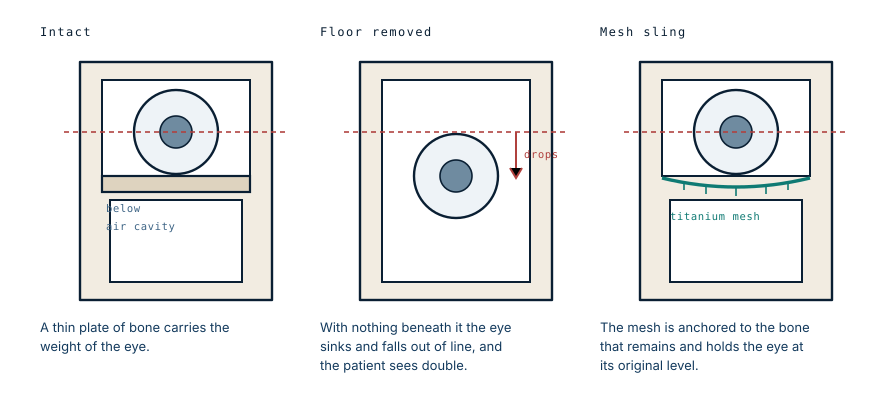

It was never cancer. It still had to come out.
Published
A 14-year-old arrived with a mass filling her right upper jaw, crossing into the left, and nearly closing off the back of her nose. She had lived with it for years. The word used for it is tumour, which is accurate and badly misleading.
What fibrous dysplasia is
It is not a cancer, and it is not really a tumour in the sense most people mean. It is a developmental fault in how bone is made.
Normally, immature woven bone is remodelled into strong, organised, mature bone. In fibrous dysplasia that step fails in one place, and the affected bone is replaced by fibrous tissue mixed with disorganised woven bone. The result is bone that is soft, expanded and structurally poor, but not invading anything and not spreading through the body.
The cause is a mutation that occurs after conception, in a single cell, early in development. Every cell descended from that one carries it, and the rest of the body does not. That is why it appears in one bone or a cluster of bones rather than everywhere, and it is why it is not inherited and cannot be passed to children.
Malignant change is possible but rare, in well under one percent of cases. For practical purposes this is a mechanical problem, not an oncological one.
So why operate at all
Because the skull has no spare room.
Bone that expands slowly in the arm is a cosmetic and structural nuisance. The same process in the midface pushes against things that cannot be pushed. It fills the sinuses. It displaces the eye. It narrows the passage at the back of the nose, which in this case was nearly closed. And where it thickens around the openings the nerves pass through, it can compress the optic nerve.
None of that requires the tissue to be malignant. A benign process is perfectly capable of taking someone's airway or their sight simply by occupying the space.
Craniofacial fibrous dysplasia tends to expand during the growing years and often stabilises once the skeleton matures, which is one reason surgical timing is genuinely debated. Operating early risks the disease continuing to grow around the reconstruction. Waiting risks damage that cannot be undone. In a 14-year-old with a mass already crossing the midline and obstructing the nasopharynx, waiting was not the option.
The floor under the eye
Here is the part of the operation that explains why this is harder than removing the mass.
The eye does not float in its socket. It rests on a thin plate of bone that forms the roof of the sinus below and the floor of the orbit above. That plate is only about half a millimetre thick in places, and nobody notices it until it is gone.

Remove the diseased maxilla and that floor goes with it. The eye then has an air cavity beneath it, and it sinks backwards and drops downward into the space.
The consequence is not mainly cosmetic. Vision depends on both eyes pointing at the same thing; the brain fuses two nearly identical images into one. Drop one eye by a few millimetres and the images no longer overlap, and the patient sees double. That is disabling in a way that a sunken cheek is not.
Hence the sling. A sheet of titanium mesh is shaped and anchored to whatever bone remains around the rim, forming a new floor for the eye to sit on. Titanium is used because it is well tolerated by the body, holds its shape indefinitely, and can be cut and bent to fit during the operation.
Keeping the face from collapsing
A second sheet of mesh was used for a different job: rebuilding the front wall of the maxilla.
The cheek is not held out by soft tissue. It is draped over the bone of the upper jaw, and when that bone is removed the overlying face has nothing to sit on and falls inward. Surgeons describe it as the face caving in, and it is difficult to correct later once the soft tissue has contracted into the hollow.
Putting the mesh in at the time of resection is therefore not finishing touches. It is the step that determines what the face looks like for the rest of her life.
The years before
She presented late, after years of living with a visible facial mass.
The medical account of this case is a single operation. The part that took years was everything before it — and fibrous dysplasia is a slow disease, which cuts both ways. It gives time to reach care, and it also gives the deformity time to become the thing a teenager is known for.
The surgical team's own note on the outcome was that she is happy now. That is the part no diagram covers, and in a case like this it is not a footnote.
What this case teaches
Benign and harmless are different words. Fibrous dysplasia does not invade or spread, and it can still take an airway or an eye by occupying space the skull does not have. The reconstruction is where the difficulty sits: removing the diseased bone also removes the floor the eye rests on, and an eye that drops a few millimetres produces double vision rather than an untidy appearance. The mesh that replaces that floor, and the second sheet that stops the cheek collapsing, are not the cosmetic end of the operation. They are the part that determines whether she can see properly and what her face looks like in twenty years.